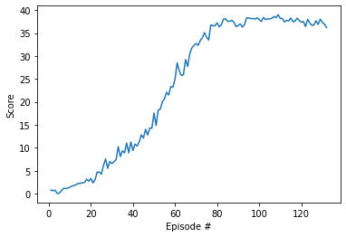

For this reacher project, I implemented DDPPG algorithm for training the Reacher env.
It has been trained by running 1000 episodes, and having average of 30.12 in the end.
For the chosen hyper parameters, I used: n_episodes=1000, # Number of episodes max_t=1000, # Number of steps per episode BUFFER_SIZE = int(1e6) # replay buffer size BATCH_SIZE = 256 # minibatch size GAMMA = 0.99 # discount factor TAU = 1e-3 # for soft update of target parameters LR_ACTOR = 1e-3 # learning rate of the actor LR_CRITIC = 1e-3 # learning rate of the critic WEIGHT_DECAY = 0 # L2 weight decay
Furthur improvements: We can add Batch normalization to the existing implementation. We can also try out different algorithms like PPO, TRPO or TNPG. We can also improve the overall hyperparamter search with some grid search opportunities, and also potentially searching for a better neural network with AutoML search.
